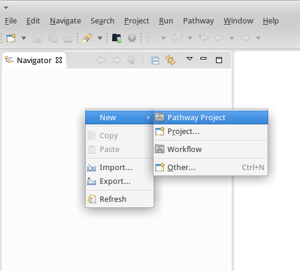

Pathway is a tool for designing and executing performance engineering workflows for HPC applications. Having a formal model of the workflow helps to organize and guide the whole optimization process.
On a Debian-based Linux system, use the following instructions to install Pathway:
sudo apt-get install libwebkitgtk-1.0-0sudo apt-get install githttp://periscope.in.tum.de/pathway/eclipse/Instructions for Microsoft Windows:
git has to be in your PATH.http://periscope.in.tum.de/pathway/eclipse/Start the Eclipse installation in which you have installed Pathway and open the Pathway perspective with the "+" button in the upper right corner. Remember that you can always reset the perspective's layout to its default by right-clicking on the corresponding button and selecting "reset".
Before you can start working on any workflow, you need to create a Pathway project from within the Navigator view.

Within this project, you can then create a new workflow. The wizard also offers some pre-defined workflows to start from.
Designing one's own workflow requires knowledge about the jBPM workflow editor and Pathway workflows in general. We strongly recommend to start with an existing workflow from the "New workflow" wizard.
In the "Pathway" perspective, you have the workflow editor in the center. Within the editor, you can graphically arrange and connect the individual activities of the workflow. New activities can be added from the toolbox. Most Pathway workflows will at least have an activity for creating the batch system manager and for creating and running experiments. Experiments are jobs to be scheduled on the HPC system. When running experiments, Pathway automatically creates a job script according to the configured type of batch scheduler.
When adding new activities, pay attention to the properties view (shown below). Some activities require mapping parameters and results to be set in order to function properly. If you look at the properties of the workflow itself, you will see that there are workflow variables defined, which can be mapped as a parameter or result for the individual activities.
Before you can run a workflow with your application as the test subject, you need to let Pathway know how to use your application. To open the application configuration dialog, select "Pathway" from the menu and go to "Edit applications". Fill in the following fields:
Note that you can use placeholders in many of those fields. Using a placeholder, you can insert the value of a workflow variable during the execution of the workflow. The general syntax is: {#VARIABLE:varName#}. So if you want to run executables from test1 to test4 for example, you can specify "test{#VARIABLE:i#}" as the executable name, where i is a workflow variable you increment within the logic of your workflow.
Before you can execute the workflow, you need an application on a HPC system that you want to investigate. Therefore, you first need to configure your HPC system and your application in the Pathway menu.
When this is done, you can select your system and application in the execution parameters view shown to the right. You may want to specify some of the other parameters also. Not all parameters need to be specified, but Pathway may ask you then during workflow execution for the required information. In general, it is more comfortable to set the values up-front.
There are several possible formats in which you can specify the number of MPI processes and OpenMP threads to use. Since Pathway is all about automation, it is possible to specify a range of numbers and the experiment will then be performed for each configuration. Below is a list of possible formats:
Finally, click on the "Start workflow" button to start the workflow execution.
Pathway will change to the execution perspective, in which the progress of the workflow execution is shown. In the editor-like view, the workflow is shown, with the current activity highlighted. Another important view is the log window, where you can find specific information about what Pathway is currently doing.
In order to see the results of the workflow execution, switch to the "Pathway (Browse)" perspective. There, you will find a list of recently performed experiments. Selecting one experiment allows you to see all its details below. If an experiment does not show up in the list, try refreshing the view (from the Pathway menu).
For problem reports and feedback please contact: firbach@in.tum.de